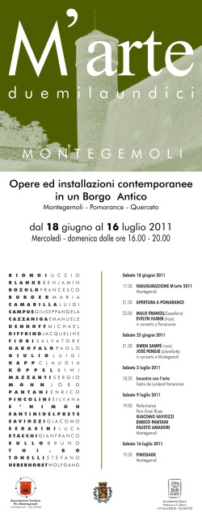

- 
| Home | Maggio 2010 | Aprile 2011 | Giugno 2011 | Luglio 2011 | 2012 |
Opere ed installazioni contemporanee in un Borgo Antico
Montegemoli - Pomarance - Querceto
Dal 18 giugno al 16 luglio 2011
Sculture organiche che cadono dall’alto, da una solida quercia in prossimità del Castello, come una manifestazione dal doppio impatto di sconvolgente ed accogliente, nella sperimentale convivenza materica di ferro, corda, ceramica, e legno vivente. Sono le forme radicali precipitate dal mistero della vita di Silvana Pincolini, che crea suggestioni direttamente dalle stanze imponderabili dell’universo. Apparenti antinomie fra i ferri-gabbia rigidi, gli anelli di Moebius dalle sfumature eleganti ed essenziali della cottura raku, le corde arcaiche ed ecologiche. Sensazioni che corrono in un groviglio di incontri improbabili, di antico e futuribile, dove l’anello stesso, rompicapo matematico, che rompe la distinzione tra i due lati ordinari della superficie, è sperimentabile in un nuovo ambiente, installato a Montegemoli in uno spazio ibrido fra campagna e urbano, in un contesto misto di sensazione-azione. Dalla natura e dalla creazione, insondati percorsi del pensiero, nella complessità di stimoli multipli, ora opposti, ora sincronici, della percezione. L’artista milanese Silvana Pincolini, si forma a Brera negli anni 60/70. Successivamente completa le competenze grafiche e scenografiche con Albe Steiner e Liisi Beckmann. Fondamentale nella sua ricerca sarà poi la svolta antroposofica e la visione steineriana dell’equilibrio vitale.
Elena Capone
Fotografia: Rita Dollmann